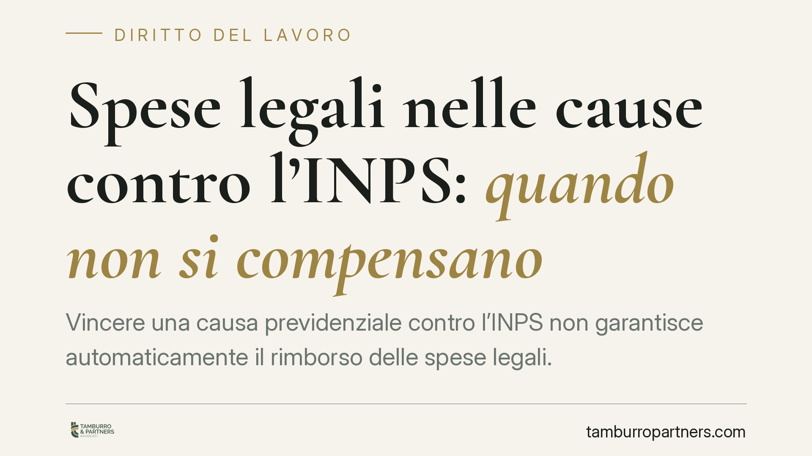

Spese legali nelle cause contro l'INPS: quando non si compensano
Vincere una causa previdenziale contro l'INPS non garantisce automaticamente il rimborso delle spese legali. Il giudice può compensarle, ma solo in casi gravi ed eccezionali e con una motivazione effettiva. Una formula astratta come «complessità della materia» non basta e può rendere nulla la sentenza. Facciamo chiarezza sul quadro normativo e sulle tutele specifiche del contenzioso previdenziale.

Il principio: vincere non significa sempre farsi rimborsare
Chi affronta un contenzioso contro l'INPS — ad esempio sui contributi dovuti alla gestione separata o sulla mancata compilazione del quadro RR della dichiarazione dei redditi — si aspetta che, in caso di vittoria, l'ente paghi anche le spese legali.
Non è sempre così. La regola generale è quella della soccombenza (art. 91 c.p.c.): chi perde paga. Ma il giudice conserva il potere di compensare le spese, cioè di lasciarle a carico di ciascuna parte, anche in capo a chi ha vinto.
Quando è ammessa la compensazione
Dopo l'intervento della Corte costituzionale (sent. n. 77/2018), le ipotesi di compensazione sono tipiche e circoscritte. Il giudice può compensare, in tutto o in parte, solo nei seguenti casi:
- soccombenza reciproca (ciascuna parte vince e perde su punti diversi);
- assoluta novità della questione trattata;
- mutamento della giurisprudenza su questioni dirimenti;
- altre gravi ed eccezionali ragioni, purché espressamente motivate.
Il punto decisivo è l'ultimo: le "gravi ed eccezionali ragioni" non possono restare sulla carta. Devono emergere da una motivazione concreta e verificabile.
La motivazione apparente rende nulla la sentenza
La Corte di Cassazione è tornata di recente su questo tema in materia previdenziale, ribadendo un principio consolidato: la motivazione "apparente" equivale a motivazione assente.
Cosa significa? L'art. 132, n. 4, c.p.c. impone al giudice di indicare le ragioni di fatto e di diritto della decisione. Una motivazione è effettiva quando spiega *perché*, in quel caso specifico, ricorrono circostanze eccezionali. È apparente quando si limita a una formula di stile che potrebbe adattarsi a qualunque controversia.
Scrivere «vista la complessità della materia» rientra, di norma, nella seconda categoria. È un'etichetta: non dice nulla sul caso concreto. Per questo una compensazione sorretta solo da formule astratte può essere cassata.
Attenzione, però: la Cassazione non garantisce il rimborso al vincitore. Impone al giudice di merito di motivare in modo puntuale. Se la motivazione è adeguata, la compensazione resta legittima.
La tutela specifica del contenzioso previdenziale
Nelle cause contro l'INPS esiste un regime speciale che va conosciuto. L'art. 152 disp. att. c.p.c. prevede, per l'assicurato che agisce in giudizio su prestazioni previdenziali e si trova sotto una determinata soglia reddituale, una tutela attenuata sul fronte delle spese: l'assicurato soccombente non può essere condannato oltre determinati limiti (salvo manifesta infondatezza o temerarietà della domanda).
È una disciplina pensata per non scoraggiare l'accesso alla tutela previdenziale. Si tratta di una regola tecnica, la cui applicazione va verificata caso per caso rispetto ai requisiti reddituali e alla natura della prestazione.
Un chiarimento sulla prescrizione dei contributi
Nel contenzioso sui contributi è frequente il tema della prescrizione. Qui va evitato un errore ricorrente. I contributi previdenziali, dopo la riforma, si prescrivono in cinque anni per effetto di una norma speciale (art. 3, commi 9 e 10, L. n. 335/1995), e non secondo i termini ordinari del codice civile.
Gli atti idonei a interrompere la prescrizione sono disciplinati dagli artt. 2943-2945 c.c. (ad esempio la domanda giudiziale o la costituzione in mora). L'art. 2941 c.c., invece, riguarda la diversa ipotesi della sospensione della prescrizione: va tenuto distinto e non confuso con l'interruzione.
Cosa cambia per chi ha una causa aperta
Per il professionista o l'assicurato in lite con l'INPS, il messaggio è duplice. Da un lato, la vittoria apre al rimborso delle spese come regola. Dall'altro, il giudice può discostarsene, ma solo con una motivazione solida: una formula vuota è aggredibile in appello o in Cassazione.
Cosa fare in concreto
- Leggere con attenzione il capo della sentenza sulle spese: verificare se la compensazione è motivata in modo specifico o con formule di stile.
- Quantificare per tempo le spese sostenute e documentarle, così da poterle far valere in caso di vittoria.
- Valutare l'impugnazione se la compensazione si fonda solo su «complessità della materia» o espressioni equivalenti.
- Verificare la soglia reddituale e i presupposti dell'art. 152 disp. att. c.p.c., che possono limitare la propria esposizione al rischio spese.
- Controllare i termini e gli atti interruttivi della prescrizione quinquennale prima di agire o resistere sui contributi.
Disclaimer
Contributo informativo a cura di Tamburro & Partners - Avv. Giuseppe Tamburro. Non costituisce parere legale.
Ogni storia di lavoro ha i suoi tempi.
Se gestisci HR e vuoi un confronto su contenzioso, ispezioni o licenziamenti, scrivi allo studio. Ti rispondiamo entro un giorno lavorativo.